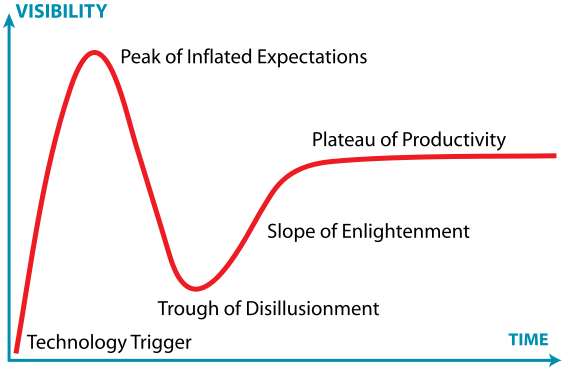
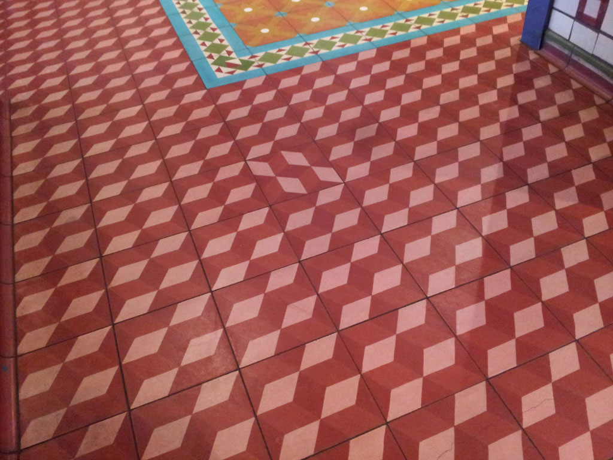
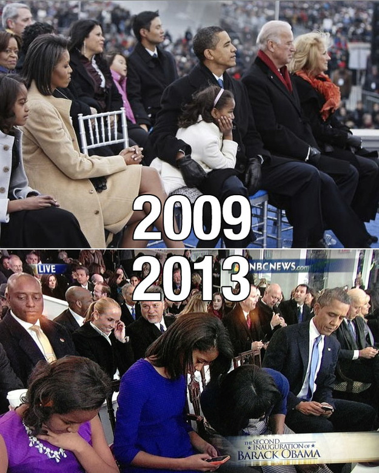
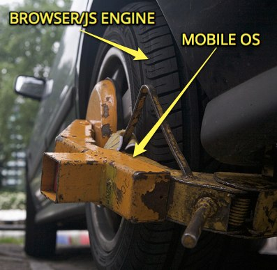
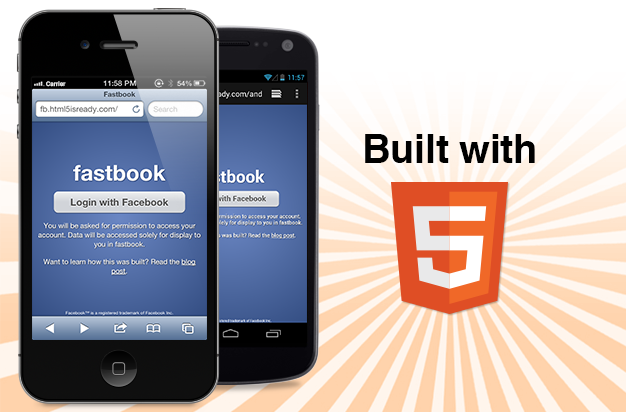
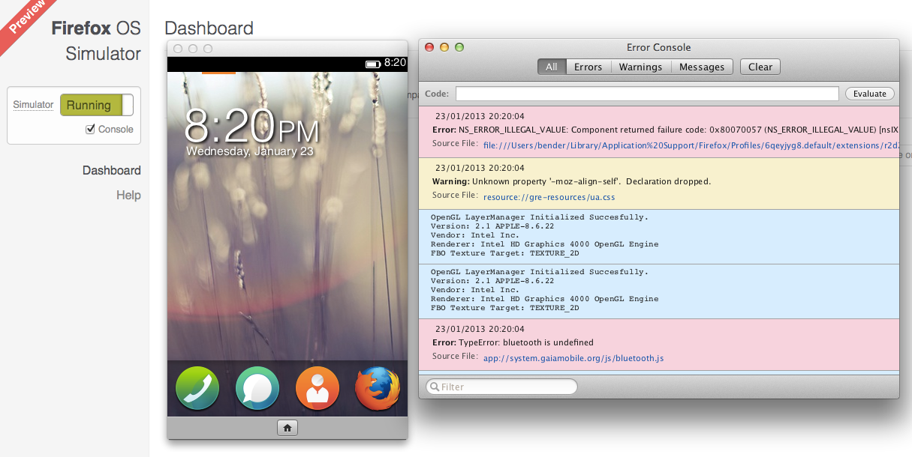
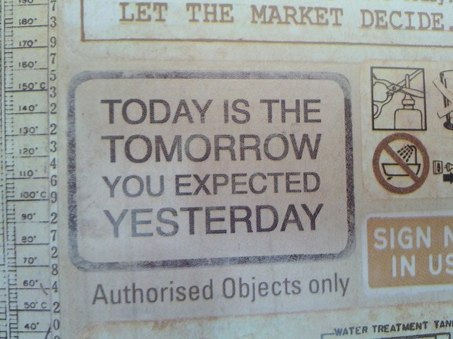

Making HTML5 work with Firefox OS
This slide deck is using the shower system - roll over the previews to see the notes and click any slide to go into presentation mode. Then use keys to navigate.
Making HTML5 work with Firefox OS
Chris Heilmann, Mozilla, AppDays 2013, Berlin, Germany, 02/02/2013
Today we are going to talk about Firefox OS and how it will make HTML5 live up to the hype that's been made around it.

The hype cycle
Every technology out there goes through the hype cycle. Everyone jumps onto it and wants to have impressive headlines which is why we inflate expectations. After a while we always realise that reality is not all rainbows and unicorns and the pendulum swings the other way. In the end we get to take the technology serious and see how it can be used productively. All of this is frustrating to techies but this is how marketing works. Just building something is not enough - you need to sell it, too.
The great things about HTML5
Promotion of HTML to an application platform
World-wide availability without waiting for hardware
Flexibility - give users what their environment can stomach
Simple development environment - just start writing
Simple deployment - put it on a server and you're done
HTML5 has a lot of great aspects that make it a very interesting proposal for developers.
The spanners in the works…

All of that said, of course there are some issues that hold HTML5 back.
One of the barriers of HTML5 is hand-made. For years we've been trying to chase the dream of building one thing and make it behave the same everywhere. Instead of embracing the idea that anything on the web can make workable and then enhanced to be more comfortable for better and newer environments, we tried to shoehorn everything new into an existing outdated infrastructure.

The weird thing is that whilst we were clinging to the past rather than celebrating the web stack as the one and only platform flexible enough to support all the environments the web can be consumed in the world around us changed. The mobile revolution is here.
I could bore you now with numbers and projections showing that more and more mobile devices are being sold. That's neither here nor there for us as developers as all of those are fleeting and can change in months. The thing we have to worry about though is that the mobile platform as it is now is not as open to web technologies as it was heralded when people declared Flash dead.
Limited access to hardware

Photo by Ricardo Liberato
Fact is that we don't get access to all the hardware parts that make a smartphone interesting. In order to do that we need to package our HTML5 apps in a native wrapper and the performance of these wrappers is worse than those of the browser on these platforms. This lock-out is holding HTML5 back.
Lack of a "native" distribution platform
Photo by Mark Sebastian
The next issue HTML5 has to face is one of perception. The closed platforms have users conditioned that apps can be found in app stores and that it is easy to pay for them there and get upgrades from there. Regardless of what we might be thinking about these stores, people want them - right now.
Failed mimicking attempts
Some of the failed attempts at selling HTML5 as an app platform are based on the approach we took. A lot of it is simulating what native platforms do rather than taking advantage of what the web can bring to the equation.
(Explanation of the picture: during the prohibition in the US moonshiners - people brewing alcohol illegaly - wore these shoes so their tracks look like cow tracks)
Woe is us! HTML5 is dead!
At TechCrunch Disrupt Mark Zuckerberg was interviewed and in the immediate coverage by the tech press quoted as saying that HTML5 was a big mistake.
I think that the biggest mistake that we made as a company was betting too much on HTML5 as opposed to native, because it just wasn't there.
Mark Zuckerberg (of sorts)
The quote went like this.
It's not that HTML5 is bad. I'm actually long-term really excited about it. And one of the things that's interesting is we have actually more people on a daily basis using mobile web Facebook that we have using our iOS or Android apps combined . So mobile web is a big thing for us.
What was failed to mention were the interesting bits.
Shooting the HTML5 messenger…
But there's no doubt that, we went for this approach, we built this internal framework that we called Faceweb , which is basically this idea that we can take the infrastructure that we built out for pushing code everyday, not having to submit to an app store, building web code on the web stack that we have, and that we can translate that into mobile development. We just were never able to get the quality of it we wanted …
It seems the main failure was Facebook's approach and internal system creating HTML5 apps - not the technology itself.
Sencha delivers: Fastbook

Making of Fastbook - Fastbook
Sencha was so ticked off by this announcement that they built a proof of concept called Fastbook which delivers the same performance in HTML5 that the native iOS app has. Regardless of the academic nature of this we learned a lot of how to optimise our HTML5 solutions to make them work much faster.
What HTML5 needs is a flagship platform
HTML5 needs a platform that brings its best features to hardware without a conversion step in between. Right now it is treated as a second class citizen where its benefits could make app development much quicker and cheaper.
Firefox OS - we're on it!
This is where Mozilla is right now going full force to bring a change to that dilemma. Firefox OS is the first truly open operating system for mobile devices.
http://arewemobileyet.com
Underneath the hood of Firefox OS are the web APIs - open source drivers with JavaScript interfaces to access all the hardware of the phone.
Building blocks in the browser
Mortar - fxos-stub -
Web Components -
X-Tag
Another big thing I am very excited about are web components, which define the missing app widgets we need, X-Tag which makes those available cross-browser and the Mortar and Webgame stub systems. Both of those allow any developer to start an app or game from building blocks and with a deployment script that uses GitHub as the host. They even create the offline and app manifests for you. Watch out for that.

Firefox OS Simulator 1.0 is here!
Whilst waiting for the phones with Firefox OS to be available, you can start with the simulator, right in the browser. Just add the extension to Firefox and you are done.
Apps built for Firefox OS also run on Android devices with Firefox installed, which means you can test your apps on your own phone easily.
Firefox Marketplace
Firefox OS will have a marketplace, of course, as this is what people expect. You can publish your apps to this market right now and will get listed once we reviewed the apps.
Taking markets to the web…
Having a market is only the first step though. The search interface on the Firefox OS phone does not only group your apps for you - it is also a discovery interface for apps on the web. Where app markets were the Yahoo Directory for finding apps this is the Google. Imagine using the success of any web site to promote its app and vice versa. This is coming.
The time is now, the place is here…

Shaun Tan: the lost thing
If you ever wanted to build your first HTML5 app and tyou were disappointed with what platforms give you now, here is your chance to have your first go for Firefox OS.
Off you go, make awesome!
If you already built apps before and want to play in an environment that treats HTML5 as a first class citizen, here is your chance. Go wild. Do new things. The web and HTML5 can beat native any day if we play it to its strengths rather than simulating native.
 Chris Heilmann, Mozilla, AppDays 2013, Berlin, Germany, 02/02/2013
Chris Heilmann, Mozilla, AppDays 2013, Berlin, Germany, 02/02/2013